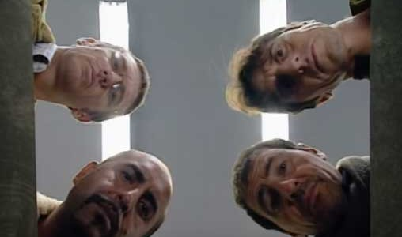
Episodios
- Tarjeta de Navidad
- Diagnóstico rectoscópico
- Seguro de desempleo
- El testigo español
- El joven simulador
- El pequeño problema del gran hombre
- Fuera de cálculo
- El pacto Copérnico
- El último héroe
- Los impresentables
- El colaborador foráneo
- Marcela & Paul
- Un trabajo involuntario
- Los cuatro notables
- Z-9000
- >La gargantilla de las cuatro estaciones
- El clan Motul
- El vengador infantil
- El matrimonio mixto
- La Brigada B
- Fin de semana de descanso
- El debilitador social
- El anillo de Salomón
- El capítulo final
Primera temporada
La primera temporada de Los Simuladores se estrenó en 2002 en Argentina y contó con 13 episodios. La serie presenta a un grupo que se dedica a resolver diferentes problemas de personas mediante planes ingeniosos y elaboradas simulaciones. A lo largo de la temporada, se desarrollan distintos casos que combinan comedia, drama y suspenso, mostrando las estrategias utilizadas para ayudar a sus clientes.
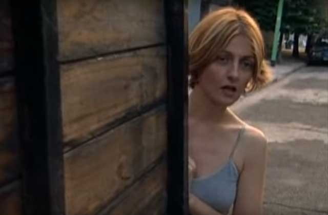
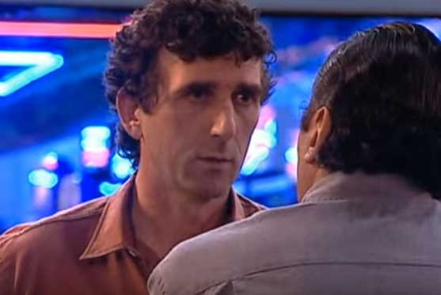
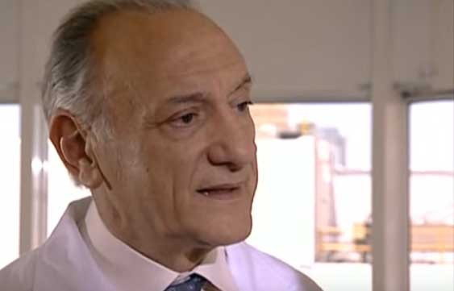
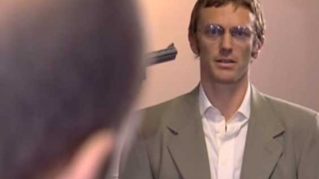
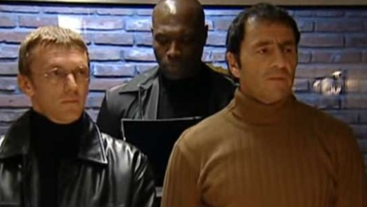
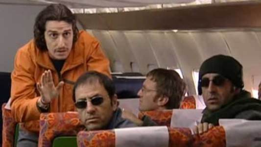
Segunda temporada
La segunda temporada de Los Simuladores se estrenó en 2003 en Argentina y contó con 11 episodios. En esta etapa, el grupo continúa resolviendo diferentes problemas mediante planes elaborados y simulaciones, enfrentándose a situaciones cada vez más complejas. La temporada mantiene la combinación de comedia, drama y suspenso que caracteriza a la serie.
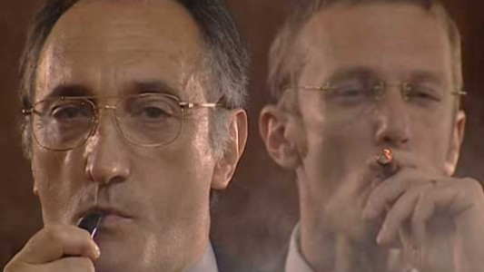
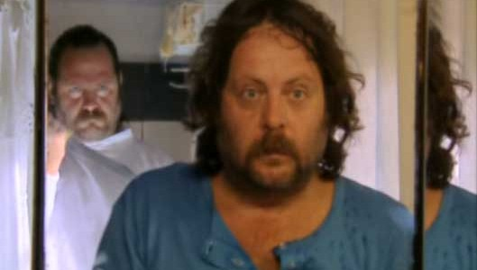
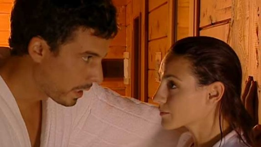
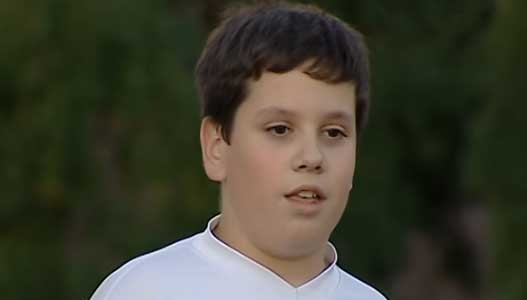
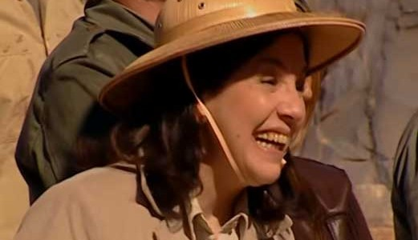

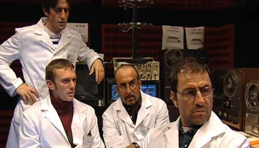
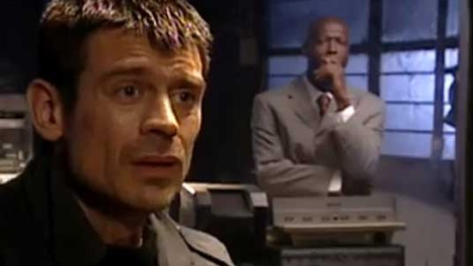
Pelicula
La película de Los Simuladores fue anunciada en 2022, con la intención de estrenarse originalmente en 2024. El proyecto avanzó con un guion terminado y planes para comenzar el rodaje, pero sufrió varias postergaciones debido a dificultades de producción y financiamiento. Finalmente, en septiembre de 2025 se confirmó que la película no se realizaría, quedando el proyecto suspendido.